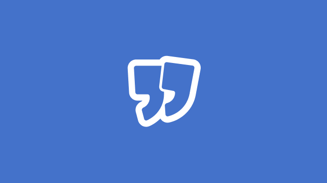

An AI-powered sales training platform taken from empty repository to live MVP in a single month, with a team of four developers and two designers.

1 monthZero to live MVP
6People led
12Projects shipped in month one
Context
Soft.eu was spun up inside Incenteev as a new product line: an AI-powered sales training platform. Reps, managers and customer success teams practise against ultra-realistic AI avatars that push back like real prospects, get coached in real time, and then work on personalised exercises that target their skill gaps. Managers follow engagement and progress from a team dashboard, and the whole thing is hosted in France and powered by Mistral AI.
The problem it answers is a familiar one: sales teams rarely get a safe place to practise before a real call, and traditional training is one-size-fits-all and hard to measure. With Soft, they train risk-free and judgement-free, with no leads burned along the way.
When I joined as Lead Product Manager there was no existing product, no backlog and no established delivery rhythm, just a target market and a hard deadline. My job was to define what the first version actually needed to be, and to get a team of six from a blank page to something real users could log into.
What I did
Framed the MVP scope from scratch — deciding what made the first cut and, more importantly, what did not.
Led four developers and two designers through discovery and delivery in the same compressed cycle, rather than running them in sequence.
Drove discovery and delivery across 12 projects inside the first month by leaning on AI for research synthesis, spec drafting and prototyping.
Built the specification and design workflow around Claude and Claude Code, which produced a 3x productivity gain on design and spec writing.
Set the delivery cadence, rituals and definition of done for a team that had never worked together before.
Impact
A working MVP shipped one month after kickoff, from scratch.
12 projects moved through discovery and delivery in that same month.
3x productivity gain on design and spec writing, measured against the team’s previous pace.
How I worked
The interesting part of this project was not the feature list — it was proving that a small team using AI properly can compress a quarter of work into a month without the output falling apart. Specs were drafted with Claude and reviewed by humans, prototypes were generated in hours instead of days, and the team spent its time on judgement calls rather than production work.